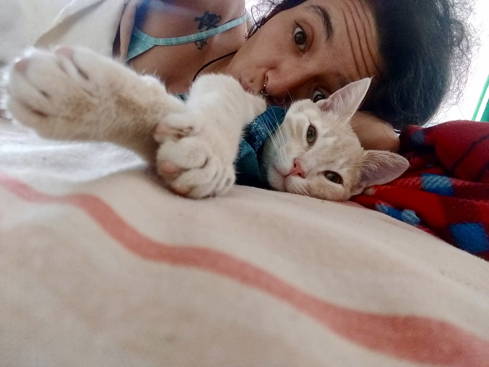

Un espacio para guardar las palabras que quiero compartir contigo.
El mensaje se guarda en este navegador.
GEBO · AMOR Y UNIÓN
Amor
Una voz, una canción o un recuerdo para escuchar cuando quieras.
UNA CANCIÓN PARA TI
UNA DEDICATORIA
No solo estas y vives en la realidad, también te conectas a la luz y eres capaz de encontrar preguntas que nos lleva a pensar en el origen, la evolución, el significado de la vida, la razón para seguir y muchas más intrigas en las que nadie piensa.
Tu manera de ver la vida lleva a otros a descubrirse como son, a desnudar su realidad y aceptar aquello a lo que más le temen.
Tu poder es alcanzar en otros, aquello que han escondido de sí mismos por el miedo a ser heridos, luego traerlo de regreso y enseñar como eso es solo un miedo que se puede enfrentar y así un ser maravilloso nace luego de estar contigo.
BERKANO · FERTILIDAD Y CRECIMIENTO
Nuestros recuerdos
Una galería para reunir fotografías de nuestros momentos.

Crear parte de un deseo de amar a un ser que necesita ayuda y tu siempre quieres ayudar y amar.
Crear también es poner todo tu esfuerzo para que la vida pueda surgir, cuidar, alimentar y sostener son partes indispensables que todo ser vivo necesita y lo haz hecho maravillosamente.